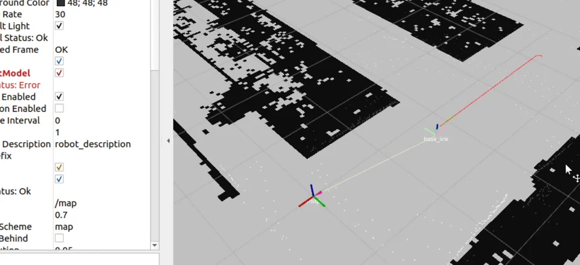

SLAM Navigation Benchmark
在同一台小车上，把四种开源激光惯性 SLAM 接进同一套 ROS 导航栈，比较离线轨迹精度和真实导航表现。我最大的收获是：轨迹误差排名预测不了导航表现，SLAM 交给导航的是哪一路点云、在哪个坐标系，同样决定避障。

- 问题
- 四种开源激光惯性 SLAM 接到同一套导航上，表现差在哪里、为什么
- 我做的
- 新加坡国立大学硕士毕业项目，独立完成：平台搭建与传感器适配、统一导航接口、录包与切换脚本、评测工具、全部实验和报告
- 技术栈
- ROS Noetic · move_base · DWA · pointcloud_to_laserscan · evo
- 实验规模
- 4 种算法；3 个场景共 6 段离线回放；实验室与走廊 5 组在线导航实验
- 关键发现
- SLAM 本身运行正常，局部代价地图却可能失效：点云太稀、坐标系不对，障碍就进不了代价地图。导航只认两个统一话题，每种算法桥接哪一路原生输出，直接影响避障。
- 结论
- LIO-SAM 整体最稳健；FAST-LIO 效率和导航质量最均衡；FASTER-LIO 能完成任务但离障碍最近；Point-LIO 在线导航最不稳定。
平台与约束
实验室能提供的只有一台 TurtleBot3 差速底盘，所以整个对比都在这一台车上做。车上的树莓派 3 负责底盘通信和传感器驱动，SLAM、可视化和批量评测放在外部工作站上，两边用 ROS 多机配置连起来。
低成本平台的问题在搭建阶段就暴露了：
- 编译会把树莓派拖死。并行编译容易耗尽内存，只能保守设置编译参数，必要时临时加大 swap。
- MID360 要做格式适配。不同算法对 IMU 维度、点云消息格式的假设不一样，有的还需要雷达不提供的 ring 信息。
- 装好就不方便本地操作。雷达和线缆装上后，日常操作改为 SSH 远程，网线连接的稳定性也变得重要。
统一导航接口
四种算法输出的里程计话题、点云话题和 TF 树都不一样。如果直接各自接导航，比出来的差异说不清是算法的，还是接法的。我的做法是固定导航这一侧：导航只读 /slam/odom 和 /slam/cloud_registered 两个话题，机体坐标统一为 base_link，全局坐标链统一为 map → odom → base_link。每种算法用 relay 节点把选定的原生输出转到这两个话题上。
- LIO-SAM
- 里程计
/odometry/imu；点云/lio_sam/mapping/cloud_registered_raw - FAST-LIO
- 里程计
/Odometry；点云/cloud_registered - Point-LIO
- 里程计
/aft_mapped_to_init；点云/cloud_registered_body - FASTER-LIO
- 里程计
/Odometry；点云/cloud_registered_body
避障走的是一条固定链路：
- SLAM 点云桥接到统一话题
- 转激光pointcloud_to_laserscan 生成 /scan
- 代价地图障碍层更新，DWA 绕行
大部分调试时间花在这条链路上，而不是 SLAM 本身。好几次后端运行正常、轨迹看着也对，局部代价地图却没有正确更新：点云太稀，或者发在错误的坐标系里，转成二维激光后障碍就丢了。这也是为什么“公平”在这里不意味着四种算法输出完全一样，而是同一台车、同一张图、同一套规划参数和航点，加上每种算法桥接选择有记录、有理由。


可重复的实验流程
四种算法、多个场景、反复重跑，流程不固定就没法比。我把它做成了几个固定入口：
- 录包。统一的录包 launch 同时记录雷达、IMU、里程计和 TF。键盘遥控的阶跃指令先经过限加速度的平滑节点再给底盘，减少冲击和晃动。早期有一次录的包只有雷达、IMU 和静态 TF，没有参考里程计，ATE/RPE 根本算不出来，之后录包前会先检查参考话题。
- 一键切换。一条脚本按名字启动指定 SLAM、建桥接、起导航。每次启动前清理残留的 launch、relay 和导航进程，避免重复 TF 树和代价地图告警造成假失败。
- 离线评测。同一段包依次回放给四种算法，导出 TUM 格式轨迹，用 evo 算 ATE/RPE，同时记录 CPU、内存和每帧耗时。
- 航点评测。评测器读取 map 坐标系下的航点文件，依次发目标，记录成功率、用时、路程、到障碍的最小距离、险些碰撞次数、恢复次数和 CPU/GPU。可以自动把起点追加为最后一个目标，测回到起点的误差。
- 建图复用。把保存的三维 PCD 地图转成二维占据栅格，不覆盖作为基线的默认地图。
离线回放
离线回放在实验室、走廊、室外三个场景各录了两段包，四种算法吃同样的传感器输入。需要先说清楚：ATE/RPE 是相对于包里的轮式里程计参考算的，不是动捕或测绘级真值，只能用来做相对比较。
- LIO-SAM
- 0.099
- FAST-LIO
- 0.103
- FASTER-LIO
- 0.104
- Point-LIO
- 0.161
- LIO-SAM
- 47.1%
- FAST-LIO
- 28.8%
- FASTER-LIO
- 94.2%
- Point-LIO
- 23.1%
室内 LIO-SAM 的 ATE 最低；FAST-LIO 只差几毫米，CPU 却低得多；FASTER-LIO 的 ATE 与 FAST-LIO 相当，CPU 和内存却最高；Point-LIO 最省，精度也最差。
走廊的两段回放最能说明单次结果不可靠：在走廊 A，Point-LIO 直接发散，ATE 达到 3135 m，比其他三种高出几个数量级；到了走廊 B，它又回到和其他算法同一水平。室外两段四种算法的 ATE 都在 2.7～4.0 m，彼此很接近，差别主要体现在 RPE 和计算开销上。
在线导航与避障
在线实验只在实验室和走廊做。室外有坡、轮子打滑，轮胎也明显磨损，轮式里程计已经不可靠，在线对比不再公平，室外只保留离线回放。

- 实验室，静态布局
- 重复 3 次取平均，四种算法成功率都是 100%。差别在安全余量：LIO-SAM 离障碍最近时仍有 0.678 m，FASTER-LIO 只有 0.200 m，且平均每次 5 次险些碰撞。
- 实验室，障碍重新摆放
- 沿途手动改变障碍布局。LIO-SAM、FAST-LIO、FASTER-LIO 都走完 5 个目标；Point-LIO 只到达第 1 个，回到起点误差超过 7.4 m。FASTER-LIO 最快，但有 15 次险些碰撞。
- 走廊，静态布局
- 单次往返，四种算法都成功，没有险些碰撞。FAST-LIO 用时最短、回起点误差最小；LIO-SAM 保持的距离最大。
- 走廊，人员干扰
- 最难的一组：只有 LIO-SAM 和 FASTER-LIO 到达终点。FAST-LIO 保守地停在目标前，Point-LIO 速度最低并触发了 2 次恢复。
- LIO-SAM
- 0.338
- FAST-LIO
- 0.156
- Point-LIO（未到达）
- 0.159
- FASTER-LIO
- 0.100
这一组里三种算法都在 41 秒左右到达；Point-LIO 超时未到，约 150 秒的运行里停了 117 秒以上。规划参数一行没改，机器人的行为却明显不同：规划器只能对它收到的位姿和障碍观测做反应，所以该比较的是从感知到规划的整条链路，而不是孤立的估计器。
局限与下一步
- 没有外部真值。离线 ATE/RPE 以轮式里程计为参考，只能做相对比较，不能当作绝对精度。
- 走廊样本少。实验室的静态布局重复了 3 次，走廊每种算法只跑了一次，结论要更谨慎。下一步先补走廊的重复实验。
- Point-LIO 的结果和接法有关。它在线表现最差，但这是在当前桥接配置下的结果，不能直接说算法本身不行。
- 动态避障还有调参空间。下一步细化导航参数和机器人外形建模；室外在线对比要等轮子和里程计状况改善后再做。
- 定性证据不够规整。部分定性结果目前只有录屏和截图，还没整理成统一的图组。